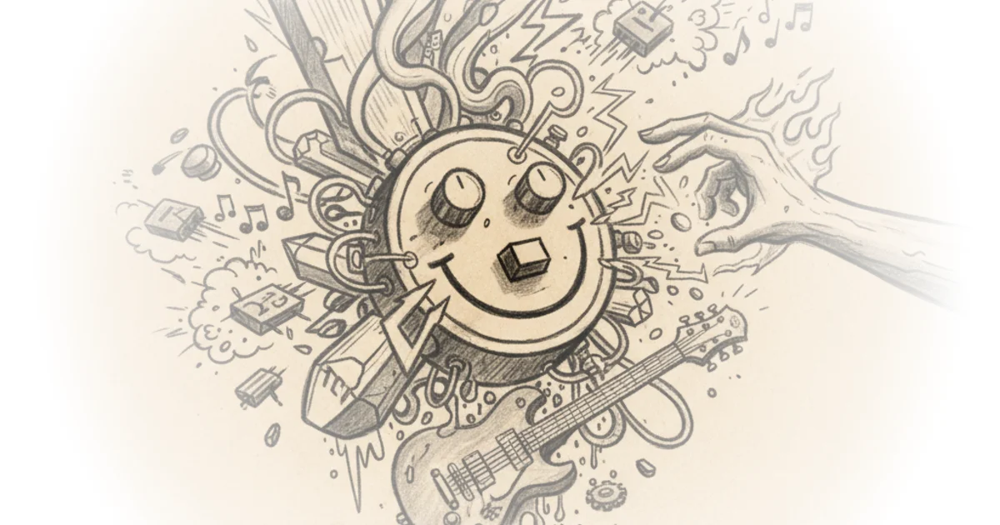
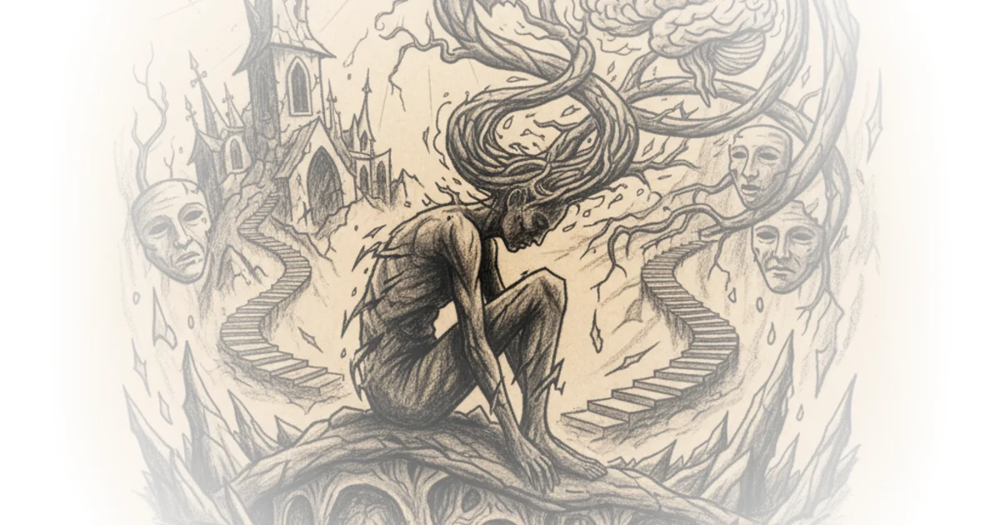
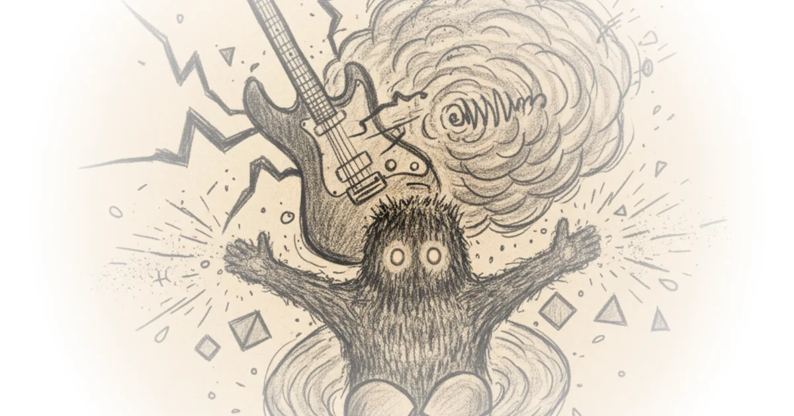
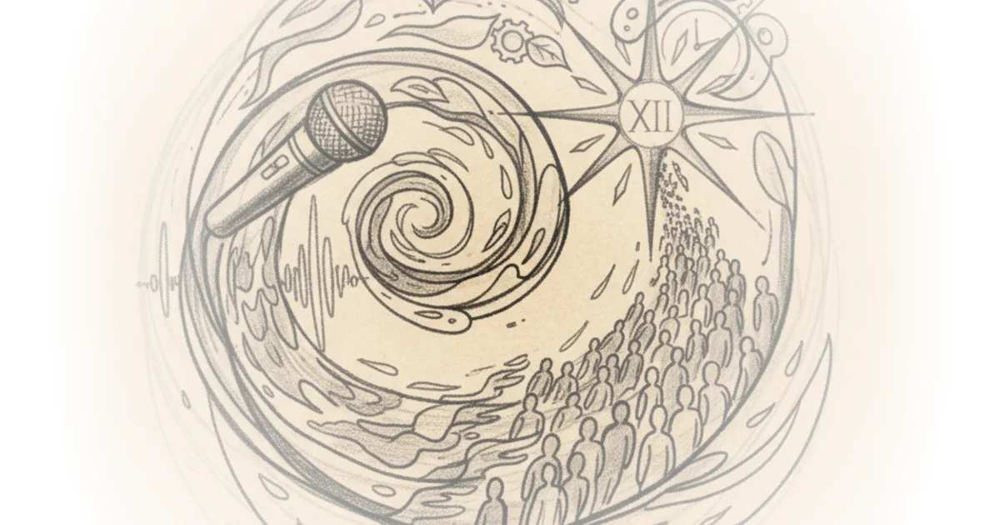
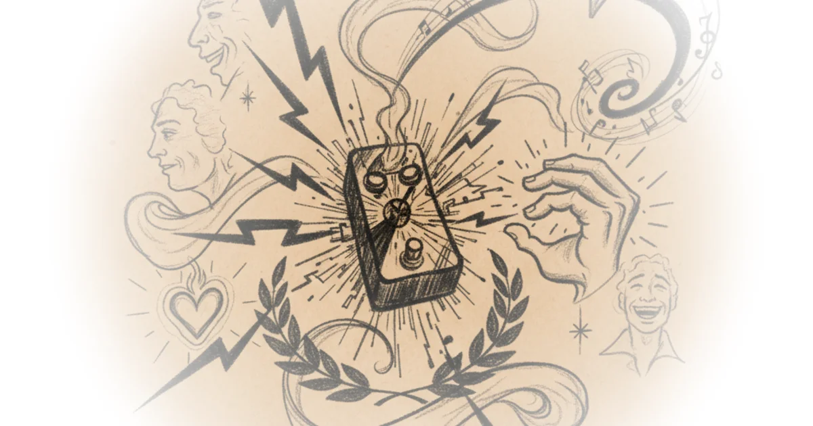
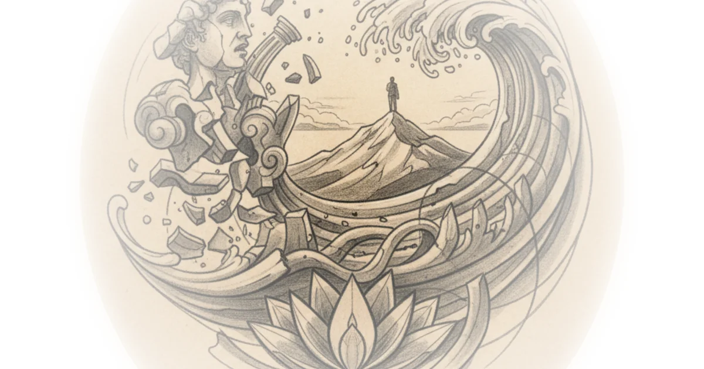
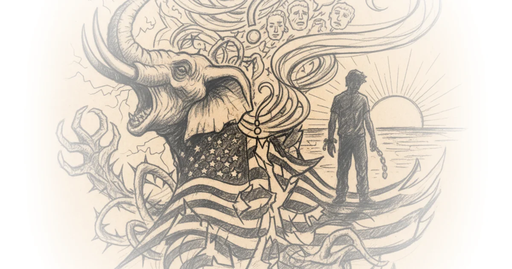
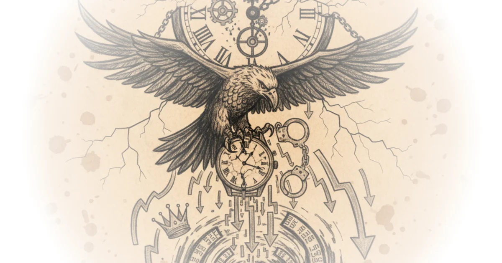

How To Build A Germanium Fuzz Face - PNP Transistor Selection / Biasing - Short Circuit Episode: 19 Josh Scott · JHS Pedals ·Jan 9, 2025 · 51 min read · Music
Dan Carlin's Hardcore History 72 Mania for Subjugation II Dan Carlin · Dan Carlin ·Jan 3, 2025 · 203 min read · History
How To Buld A Silicon Fuzz Face - JHS Smiley Legends Of Fuzz - Short Circuit Episode: 18 Josh Scott · JHS Pedals ·Dec 27, 2024 · 42 min read · Music 
Episode #219 ... Dostoevsky - Crime and Punishment Stephen West · ·Dec 22, 2024 · 34 min read · Culture
Episode #218 ... Dostoevsky - Notes From Underground Stephen West · ·Dec 17, 2024 · 35 min read · Culture 
Nightmare Fuzz Face Kit Doesn’t End Well - Short Circuit Episode: 17 Josh Scott · JHS Pedals ·Dec 16, 2024 · 55 min read · Music
Live Debate: Cliffe and Stuart Knechtle vs Alex O'Connor and Phil Halper Alex O'Connor · Cosmic Skeptic ·Dec 12, 2024 · 155 min read · Faith
How To Mod A Big Muff Fuzz With The JHS "Moon Pie" Modifications - Short Circuit Episode: 16 Josh Scott · JHS Pedals ·Dec 9, 2024 · 59 min read · Music
Episode #217 ... Religion and Nothingness - Kyoto School pt. 2 - Nishitani Stephen West · ·Dec 7, 2024 · 46 min read · Culture
How To Build The Jack White / Third Man Fuzz-A-Tron Fuzz Pedal Kit - Short Circuit Episode: 15 Josh Scott · JHS Pedals ·Dec 2, 2024 · 66 min read · Music 
11 Hour One Million Subscriber Livestream Alex O'Connor · Cosmic Skeptic ·Nov 30, 2024 · 634 min read · Culture 
How To Modify A Boss Blues Drive BD-2 Overdrive Pedal - Short Circuit Episode 14 Josh Scott · JHS Pedals ·Nov 25, 2024 · 57 min read · Music 
How To Modify A Danelectro Daddy O Overdrive Pedal - Short Circuit Episode 13 Josh Scott · JHS Pedals ·Nov 18, 2024 · 49 min read · Music
Episode #216 ... The Self-Overcoming of Nihilism - Kyoto School pt. 1 - Nishitani Stephen West · ·Nov 18, 2024 · 35 min read · Philosophy 
Ross Sells Out - (Hang Out With Josh As We Bring In Our Biggest Sale Of The Year) Josh Scott · JHS Pedals ·Nov 15, 2024 · 59 min read · Music
What Did I Do Wrong? (Learning from Failure) Ross Pedals Josh Scott · JHS Pedals ·Nov 12, 2024 · 28 min read · Music
Novara Reacts to Victory Novara Media · Novara Media ·Nov 6, 2024 · 82 min read · Political Strategy 
On These Math Problems, Smarter People Do Worse Derek Muller · Veritasium ·Nov 4, 2024 · 13 min read · Science
Episode #215 ... How Mysticism is missing from our modern lives Stephen West · ·Oct 31, 2024 · 31 min read · Philosophy
The Closest We’ve Come to a Theory of Everything Derek Muller · Veritasium ·Oct 29, 2024 · 28 min read · Science
Will Ukraine Be ‘Betrayed’? Good Times Bad Times · Good Times Bad Times ·Oct 24, 2024 · 15 min read · Foreign Policy
Episode #214 ... Framing our Being in a completely different way Stephen West · ·Oct 21, 2024 · 35 min read · Philosophy
Episode #213 ... Deleuze Interprets Nietzsche Stephen West · ·Oct 13, 2024 · 36 min read · Philosophy
We Might Find Alien Life In 1827 Days Derek Muller · Veritasium ·Oct 11, 2024 · 15 min read · Science
Artist Marguerite Humeau: To Be Alive is a Great Responsibility Louisiana Channel · The Louisiana Channel ·Oct 10, 2024 · 11 min read · Culture
Watch Market Collapse! Why Did Secondary Market Prices Fall So Much? Patrick Boyle · Patrick Boyle ·Oct 6, 2024 · 24 min read · Economics 